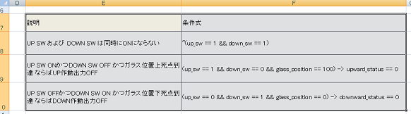
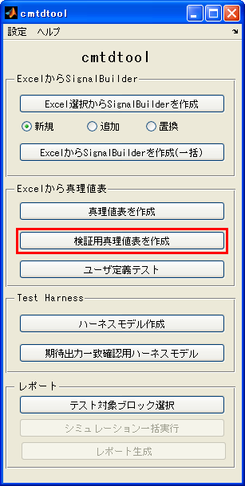
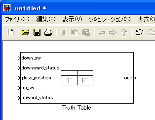
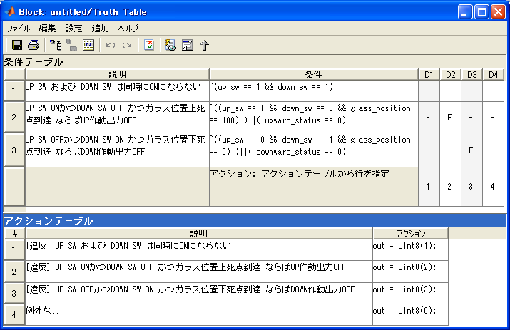
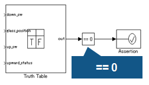
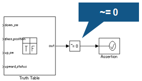
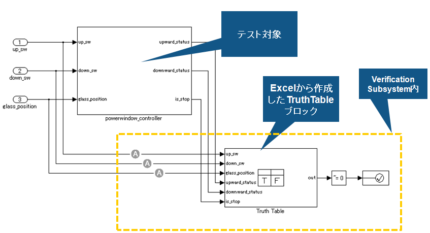

検証用TruthTableブロック自動作成
- MATLAB R2007a以降対応
- Stateflow必要
Contents
概要




検証式記述ルール
- 第1列「説明」： モデル中のコメントとして利用されます。シミュレーションには直接影響を与えません。
- 第2列「条件式」： 第1列に対応する条件式を記述します。算術演算子、論理演算子、比較演算子を含むMATLAB式で記述します。なお、このツール独自の機能として、implies 「->」 が利用可能です。 条件式として 「A -> B 」と記述した場合、それは自動的に ~A || B に変換されます。(記述の簡素化のため)
注意事項
- 条件式欄では時相論理を直接扱うことができません。その場合には、時間に関わる部分をユーザが作成する必要があります。（例えば、up_sw_old 変数を条件式中で使い、 Unit delay ブロックを用いて1サンプル過去のup_sw値を up_sw_old ポートに接続するなど。）
異常系パターン記述
異常が発生してはならない条件を記述する (いずれの異常条件にも合致しない場合は正常とする)

正常系パターン記述
正常な条件をすべて記述する (正常以外はすべて異常とみなす)

モデルイメージ

デモ実行例
- cmtdtool\demoフォルダ内 cmtdtool_sampledata.xls を開く
- 「検証式」タブ内 E7:F10を選択する
- cmtdtool 上で「検証用真理値表を作成」ボタンをクリックする
- 新規モデル上にTruth Table ブロックが作成されていることを確認する
- コマンドウィンドウから以下を実行することでGUIと同様な操作が実行可能であることを確認する
xls2VerificationTruthTable('cmtdtool_sampledata.xls','検証式','E7:F10');